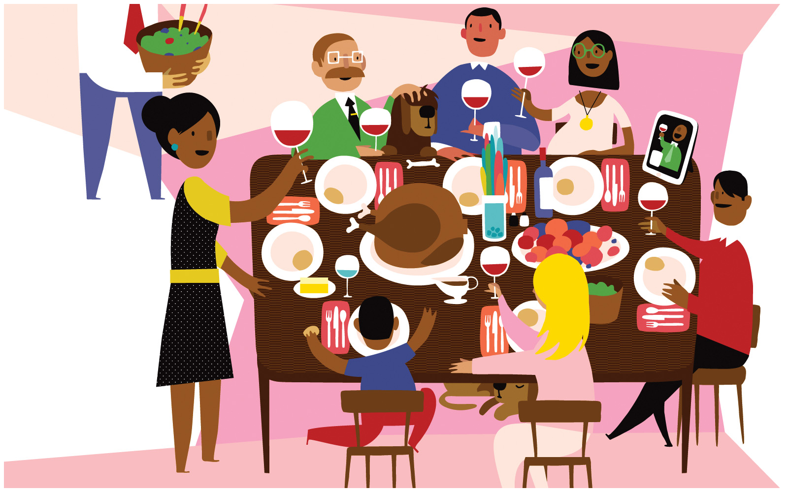

SNAP Challenge¶

Social safety net programs are one way to combat economic inequality. These programs are frequently controversial. This exercise allows you to examine one of these programs - the Supplemental Nutrition Assistance Program (SNAP). In doing so, you can think through sociological analyses of the causes of and solutions to poverty.
Description¶
Approximately 15% of North Carolina residents receive SNAP benefits. In this assignment, you will assume that you have a SNAP allotment of $121 per month/per person (the North Carolina average) for you and your 10-year old child for a total of $240 a month.
Based on your $60 per week food budget, take a trip to your local grocery store (either online or in person) to plan a week of meals for yourself and your child. Make certain you allot yourself the amount of food you typically eat. As a reminder, the recommended daily calories for a 10 year old are 1,400-1,800 and an adult are 1,800-2,600.
Your analysis should include a grocery list (including the cost of each item) and one week’s menu (including the total calories for each meal) as in the following example:
Grocery list:
Purchase |
Cost |
|---|---|
Gallon of milk |
$4.20 |
7 Banana |
$1.40 |
5 apples |
$2.35 |
Week’s menu:
Day One:
Breakfast: 1 c cereal, 1 c milk, banana (336 Cal)
Lunch: 2 slices bread, 1 slice lunchmeat, 1 apple (320 Cal)
Dinner: 1 c pasta, .25 c pasta sauce, 1 c broccoli, 1 tbl butter (380 Cal)
Snacks: 1 granola bar, 1 c carrot sticks (250)
Day Two:…
With your shopping list and menu, include a one paragraph reflection on your experience. Was it easy to meet the guidelines? Difficult? What did you have to give up, if anything? Are your meals nutritionally balanced? How does this differ from your own diet growing up?
Requirements¶
One page reflection on experiences.
Grocery list, including items and cost.
Meal plan for one week for one adult and one child.
No late assignments will be accepted.
Grading¶
Grading is High Pass (100); Pass (87) and Fail (0). Students who do not satisfactorily complete the exercise (i.e, Fail) will be allowed to revise and resubmit their application for a Pass within one week.
To be eligible for a High Pass, you must go substantially beyond the assignment requirements both in terms of research and analysis. To qualify for a High Pass, you must include a section at the front of your paper called “High Pass” with at least 50 words detailing how you exceeded the requirements.
*Assignment based on CJ Pascoe’s version of the “The Food Stamp Challenge” in Sociology Through Active Learning edited by Kathleen McKinney and Brabara S. Heyl. Los Angeles: Pine Forge Press. 2009.